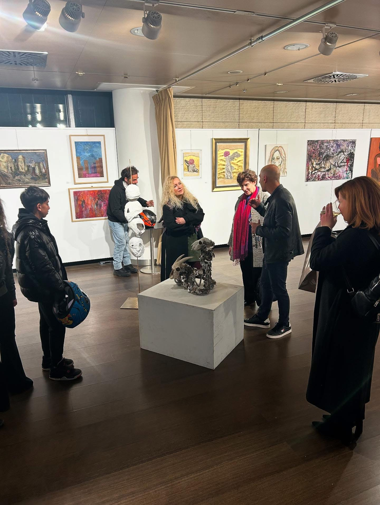
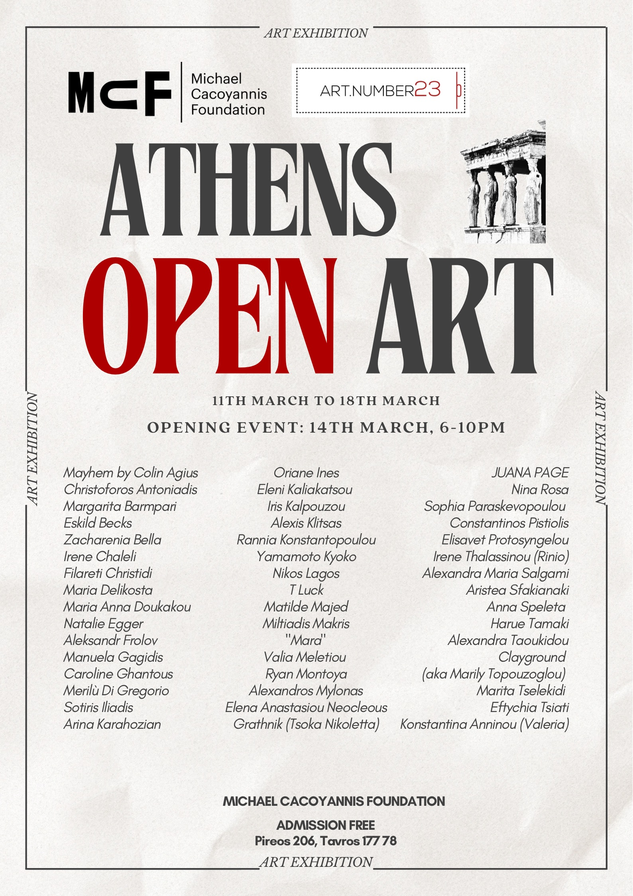
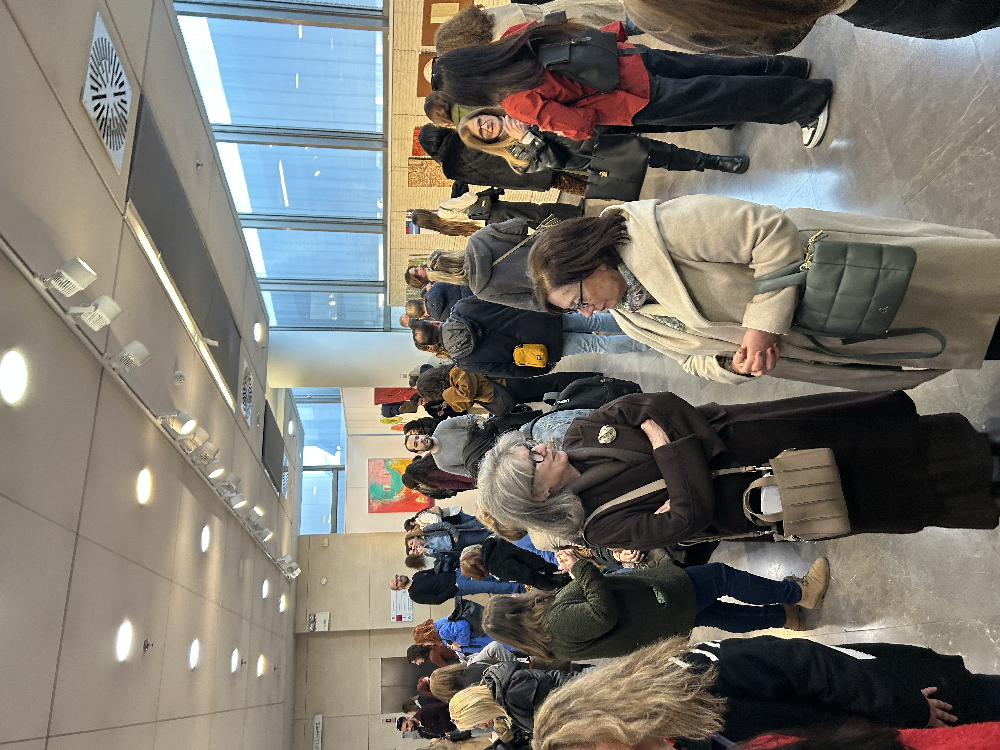
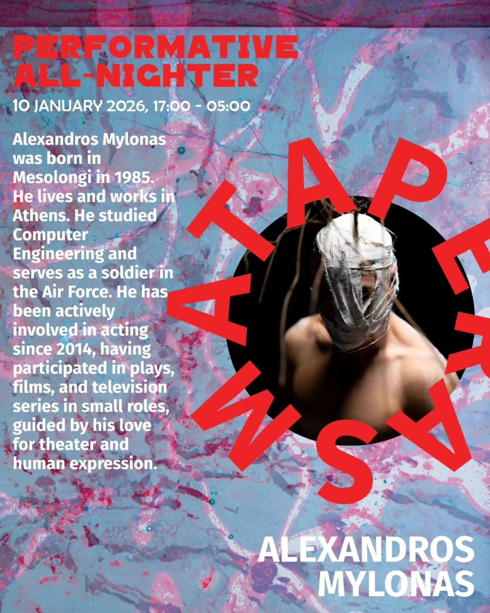
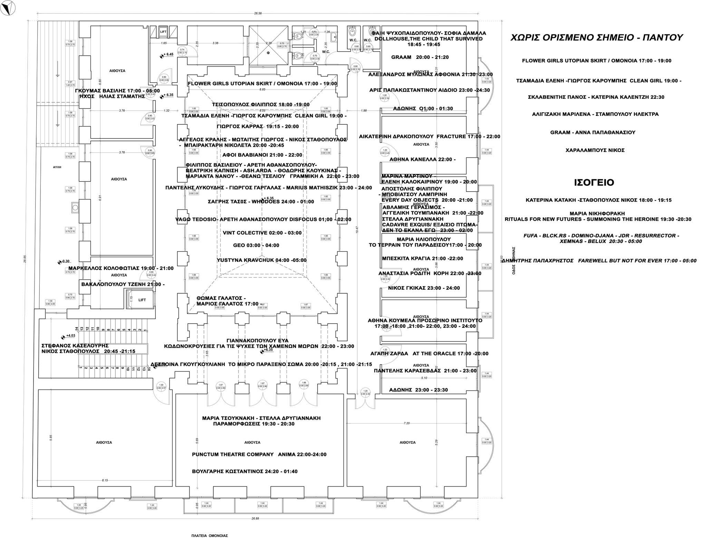
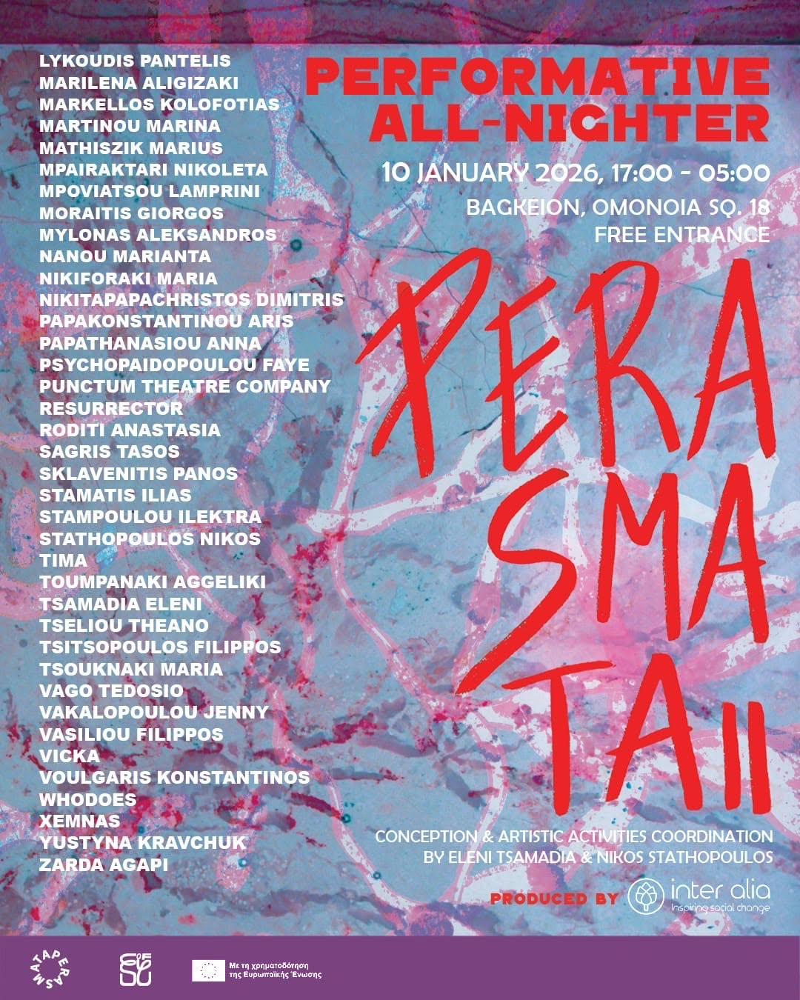
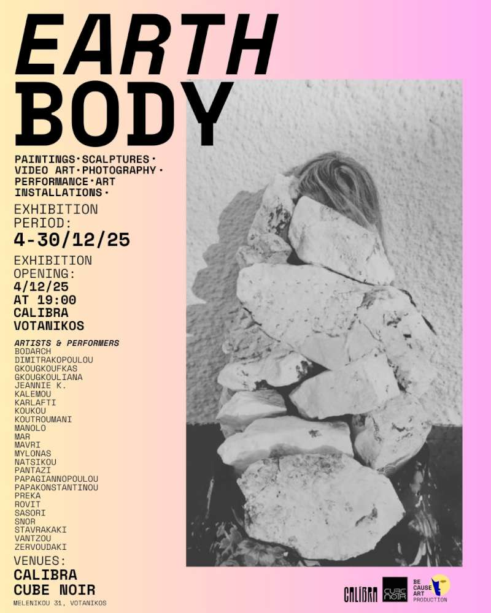
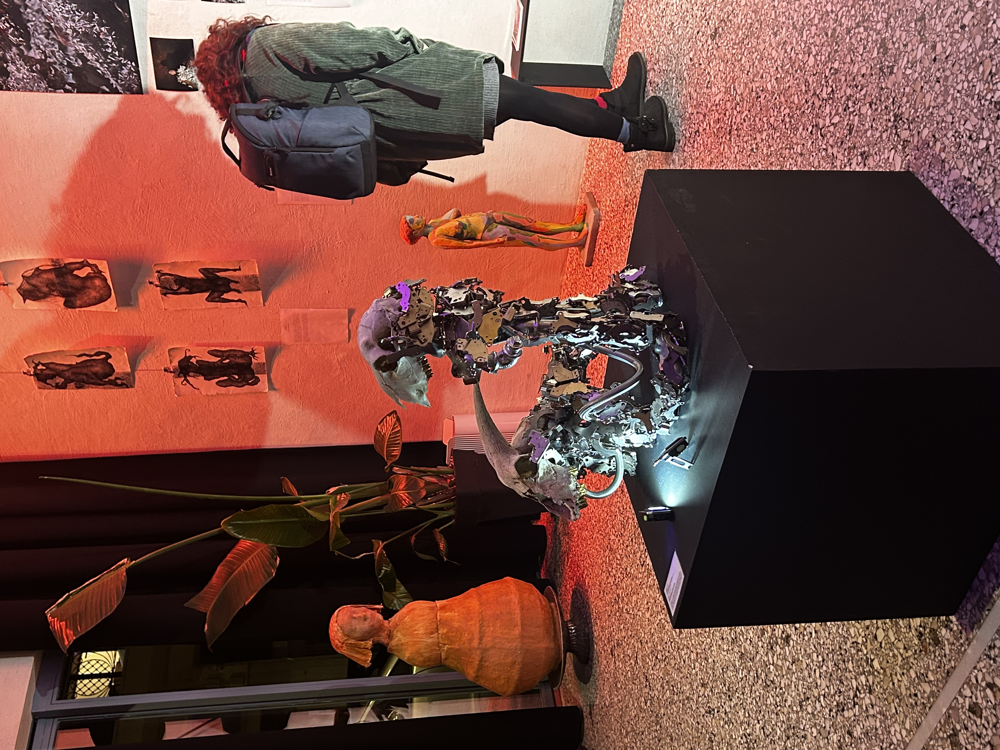

Announcements & press
Upcoming performances, recent presentations, and press.
Athens Open Art
Ομαδική έκθεση στο Ίδρυμα Μιχάλης Κακογιάννης, Αθήνα. 11–18 Μαρτίου 2026, καθημερινά 18:00–22:00.



Perasmata II
PERASMATA ΙΙ: Επιτελεστική Ολονύχτια στο Ξενοδοχείο Μπάγκειον
10 Ιανουαρίου 2026, 17:00 – 05:00 | Πλατεία Ομόνοιας, 18
Τα PERASMATA ΙΙ προσκαλούν το κοινό σε μια ολονύχτια δράση ζωντανών επιτελέσεων που θα αναπτυχθούν σε όλο το εύρος του ιστορικού Ξενοδοχείου Μπάγκειον. Για μία μόνο νύχτα, ο χώρος ενεργοποιείται ως πεδίο διαδοχικών συναντήσεων και μεταβάσεων, όπου οι επισκέπτες μπορούν να κινηθούν ελεύθερα και να παρακολουθήσουν έργα που εκτυλίσσονται σε πραγματικό χρόνο.
Οι δράσεις αναπτύσσονται σε διαφορετικές κλίμακες και ρυθμούς, άλλοτε με διάρκεια και άλλοτε με αιφνίδιες εμφανίσεις, διαμορφώνοντας μια ατμόσφαιρα συνεχούς μεταβολής. Η παρουσία του κοινού λειτουργεί ως αναπόσπαστο στοιχείο της συνολικής εμπειρίας.
Ο χώρος του πρώην ξενοδοχείου χρησιμοποιείται ως εργαλείο και διάμεσο για τις επιτελούμενες μεταβάσεις, ενώ στόχος του εγχειρήματος είναι η δημιουργία ζωντανών στιγμών που θα αποτελέσουν έργα στην συλλογή της μνήμης των παρευρισκομένων.
Οραματιζόμαστε μια νύχτα όπου ο καλλιτέχνης δεν προσφέρει αντικείμενα, αλλά συνθήκες. Μια νύχτα όπου το έργο αντλεί τη δύναμή του από την εγγύτητα, τη συνάθροιση και το εύθραυστο αλλά ισχυρό ύφασμα του «μαζί».
Οργάνωση παραγωγής: Inter Alia
Σύλληψη και συντονισμός καλλιτεχνικών δραστηριοτήτων: Ελένη Τσαμαδιά, Νίκος Σταθόπουλος
Πληροφορίες εκδήλωσης:
Ημερομηνία: 10/1/2026, 17:00 – 05:00
Τοποθεσία: Μπάγκειον, Πλατεία Ομόνοιας, 18



Earth Body
EARTH BODY Art Exhibition: 4–30 Δεκεμβρίου 2025
Opening: 6/12 στις 20:00 @ Calibra Votanikos
Η Calibra και το Cube Noir παρουσιάζουν την έκθεση EARTH BODY, ένα εικαστικό εγχείρημα που ερευνά τη σχέση του ανθρώπου με το σώμα του ως υλικό και ως χώρο.
Εξερευνούμε τη γήινη φύση του σώματος και τις πολλαπλές μορφές που μπορεί να πάρει η ύπαρξή μας όταν αγγίζει το χώμα, το νερό, τον αέρα και τη φωτιά. Καλλιτέχνες από διαφορετικά πεδία / εικαστικά, ζωγραφική, κεραμική, video art, φωτογραφία και performance art / συνδιαμορφώνουν έναν ζωντανό χώρο όπου το σώμα γίνεται γήινο αρχείο, μνήμη, αφήγηση και αντίσταση.
Μια εμπειρία που βιώνεται.
Η performance «Αφθονία» παρουσιάζεται στο πλαίσιο της καλλιτεχνικής έκθεσης EARTH BODY, παράλληλα με την έκθεση των γλυπτών.
Curator: Σοφία Σταυρακάκη

